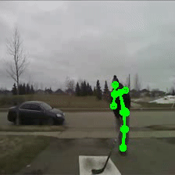
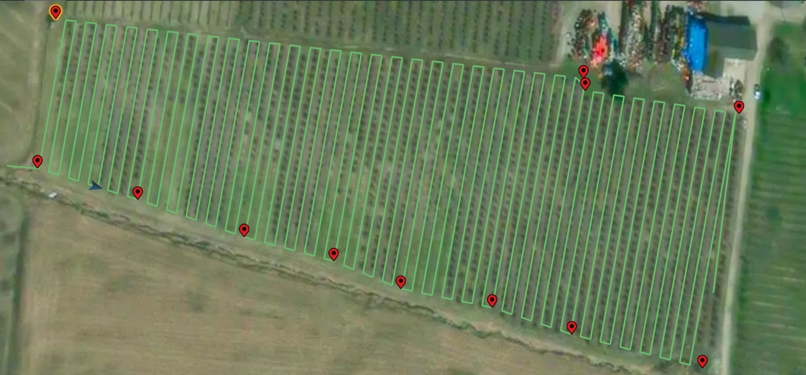
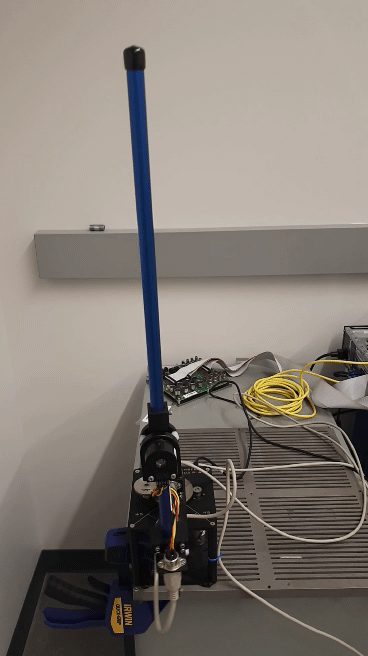
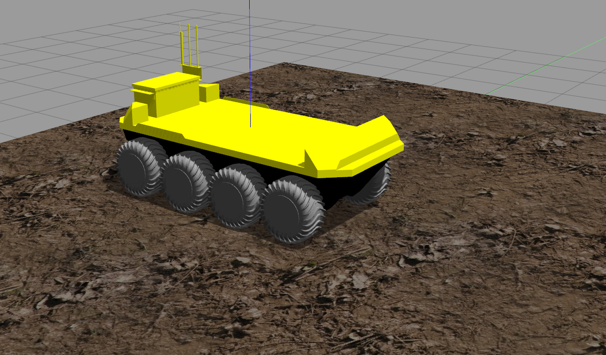
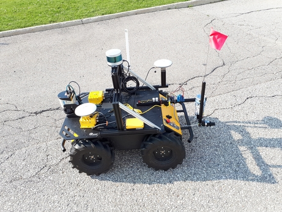
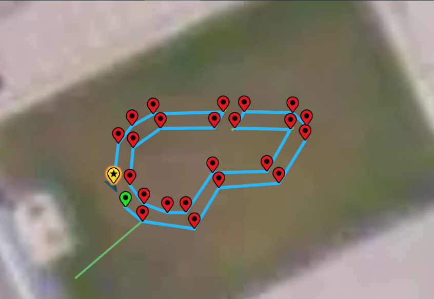

Loïc James Azzalini

Hockey Action Recognition via Pose CNN (Capstone Project)
SmartSnipe is a smart hockey "shooter tutor" that can be attached to any hockey net to enhance the shooting practice experience. By leveraging actuators mounted on the board, the slots are remotely controlled to simulate goal scoring opportunities, while a player-facing camera, a speed gun and various detection sensors are fused to produce performance indicators and provide feedback to the player. Action recognition via CNN-based pose estimation is being researched to infer when a player is in a shooting position. The results shown below have been obtained with a modified OpenPose library running on an NVIDIA Jetson TX1 with a Kinectv1 camera. Check out our promotional video!



GPS-based offline coverage path planning (Fall 2019)
Following the integration of a new GPS sensor with the point-to-point navigation stack during my internship at Clearpath Robotics, I started experimenting with coverage path planning methods for mobile robots. Based on the popular Boustrophedon cell decomposition method, I implemented an offline coverage "path planning" algorithm to parse arbitrary polygons into a sequence of GPS waypoints which could then be passed to the mobile platform's navigation stack. The user need only select boundary points in a GUI with GPS images of the location to delineate the region of interest and the extented stack would compute the appropriate path segments, accounting for obstacles and non-convex angles.

URA in nonlinear control (Fall 2019)
As a part-time undergraduate research assistant in nonlinear control, I setup and tested a rotary inverted double pendulum to support the investigation of nonlinear controller design based on the theory of virtual holonomic constraints. While time did not permit the implemetation of such constraints in the controller design, this project provided a good application of state space design and hands-on introduction to LQR.

ROS open-source contributions (Summer 2019)
During my internship at Clearpath Robotics, I was fortunate to be able to contribute to open-source software, mainly through the ROS ecosystem. From drivers for sensors commonly found on mobile robots to Gazebo simulations for Clearpath platforms, this experience was a great way to be involved in the development of robotics research. I developed the first iteration of the Clearpath Moose Gazebo simulation, now available for ROS Kinetic!

Clearpath hackday: turfbot (Summer 2019)
During the 2019 Clearpath Summer hackday challenge, our team of three decided to build yet another line marking robot for turf. However, instead of converting the office backyard into a soccer pitch, we thought we could pull-off a publicity stunt by printing the company logo, large enough to be captured by a drone's camera flying overhead. Well, we didn't quite get to that stage.. but we got pretty close! The logo was parsed as a polygon whose vertices were then converted into local GPS coordinates to allow for waypoint navigation.


URA in computational fluid dynamics (Summer 2017)
As a part-time undergraduate research assistant in CFD, I gained valuable experience with common CFD tools by simulating shock wave interactions between bodies travelling at hypersonic speeds.